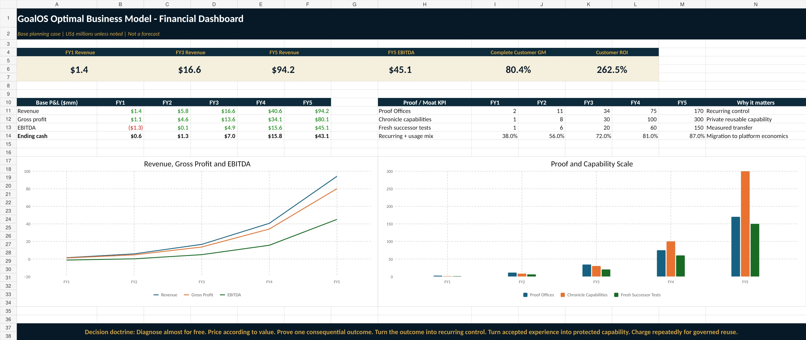

Institutional library
THE SYSTEM, THE PROOF, AND THE MODELS
Decision documents, economic models, operating systems, research, and deployment packages. Scenarios and prices remain hypotheses to be validated.

Complete launch library
GoalOS Optimal Business Model — Complete PackageZIP · working documents / explicit hypotheses
DownloadExecutive BriefPDF · working document / explicit hypotheses
DownloadStrategy MemorandumPDF · working document / explicit hypotheses
DownloadCommercial & Pricing PlaybookPDF · working document / explicit hypotheses
DownloadInvestor & Board DeckPDF · working document / explicit hypotheses
Download5Y Financial & Unit Economics ModelXLSX · working document / explicit hypotheses
DownloadBusiness Model CanvasPDF · working document / explicit hypotheses
Download90-Day Autonomous Commercial Launch PlanPDF · working document / explicit hypotheses
DownloadMegacorn Launch Book ΩPDF · category thesis / claim-bounded
DownloadEnterprise Buyer DeckPDF · enterprise decision material
DownloadGoalOS Sells GoalOS Case StudyPDF · main institutional case
DownloadLaunch Financial ModelXLSX · editable management scenarios
DownloadCommercial Proof Run 001ZIP · preregistered start-now operating system
DownloadAutonomous Money Machine ΩHTML · standalone browser-local operating system
DownloadCanonical Private Capability Network ΩZIP · protected invocation architecture
Download